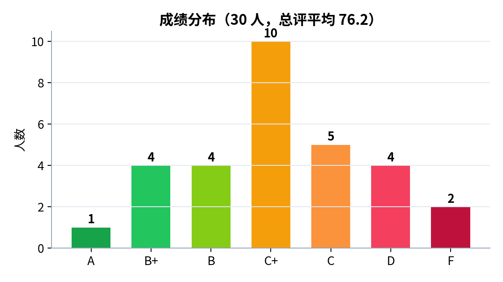
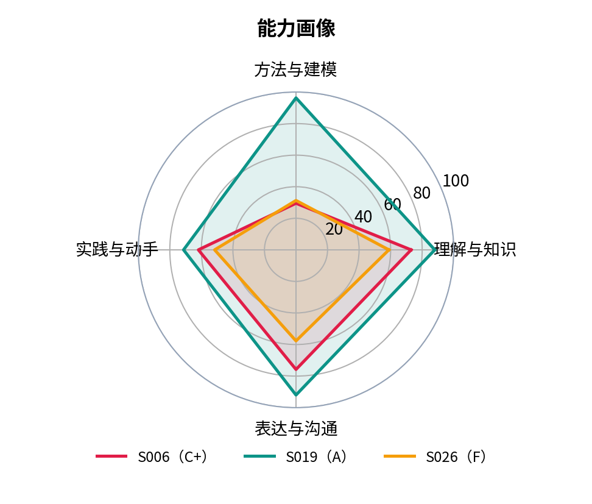
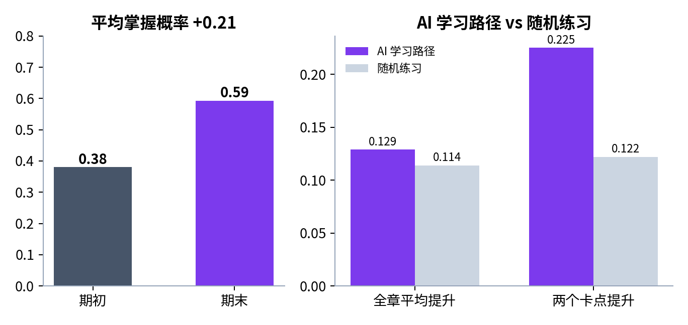
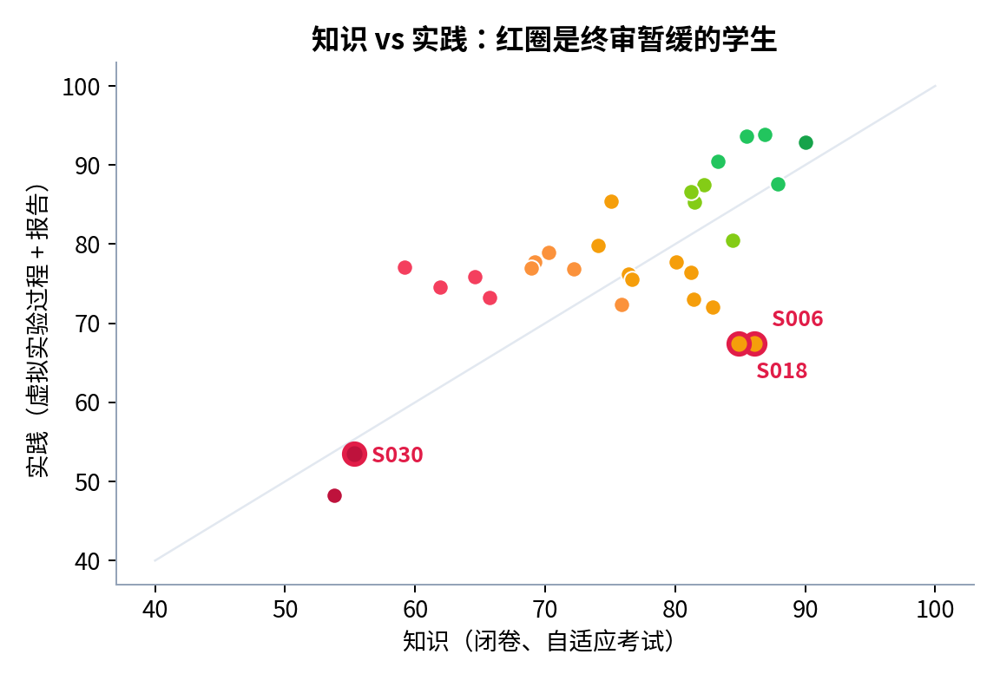
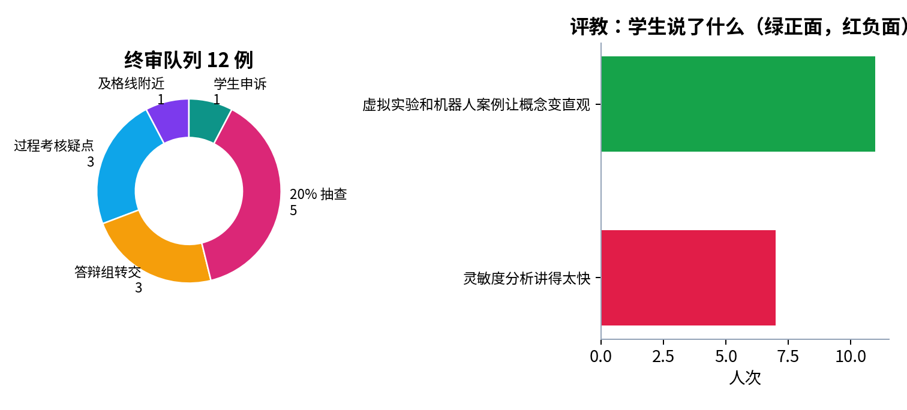

《大学物理（上）》课程教学质量报告
学期 2026-2027-1 开课班 PHY1101-01 学生 30 人
演示样稿：数据为模拟数据，数字由评价流水线计算得出。
76.2总评平均
+0.21掌握概率增值
10 人学业预警
12 例终审案例
一、学业结果
| 项目 | 结果 |
|---|---|
| 总评平均 | 76.2 |
| 成绩分布 | A 1，B+ 4，B 4，C+ 10，C 5，D 4，F 2 |
| 三根支柱平均 | 知识 76.0，实践 77.8，综合 73.7 |


二、学习增值
平均掌握概率由期初 0.381 提高到期末 0.593，增值 0.212（30 人）。期末最弱的知识点：出手误差的灵敏度（0.52）、数值微分与采样误差（0.54）。

三、学业预警与终审
学业预警 10 人（已推送任课教师、辅导员）。终审队列 12 个案例：及格线附近 1，过程考核疑点 3，答辩组转交 3，20% 抽查 5，学生申诉 1；暂缓发布成绩单 3 人，等口试结果。

四、学生评教
回收 27 份；得分最低两题：E6（3.15）、E5（3.59）。
| 学生反馈主题 | 人次 | 倾向 |
|---|---|---|
| 虚拟实验和机器人案例让概念变直观 | 11 | 正面 |
| 灵敏度分析讲得太快 | 7 | 负面 |

五、持续改进（待教师确认；演示稿由规则生成，正式版由 AI 起草）
- CO2（能为机器人等工程问题建立运动学模型并求解）直接评价 0.624，低于阈值 0.70；考核项中“实验过程：建模”得分率最低（0.363）。建议：加强该环节的指导与练习，针对最弱知识点（出手误差的灵敏度（0.52）、数值微分与采样误差（0.54））增加讲解和练习，下学期复核。
- 评教最低两题为 E6（3.15）、E5（3.59），均与“反馈”有关：建议作业、实验报告的反馈写明具体错误和改进方法。